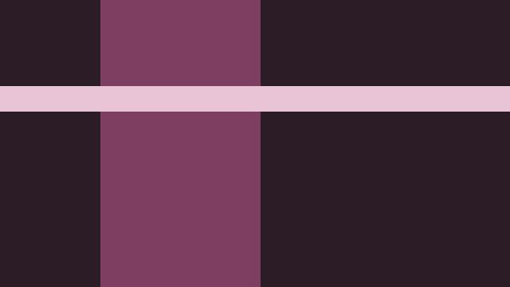
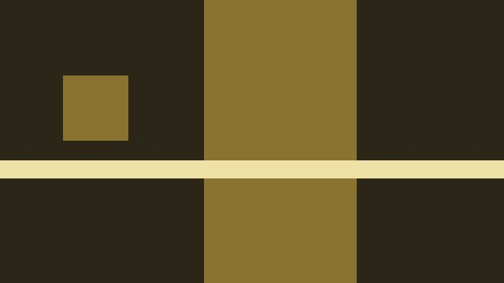

設定・質問・部をコピーします。日程・枠・作品・スタッフはコピーしません。
募集 10/10(土)–11/08(日)(30日間) → 開催 11/21(土)–11/22(日)(2日間)· 毎日 18:00–23:00
投稿済みの作品をこのイベントに加えるのは 運営の承認後すぐにできる
枠を取っていない作品の紐付けを 許可しない許可する
作品の持ち主が編集できる範囲は 既定のまま項目ごとに決める